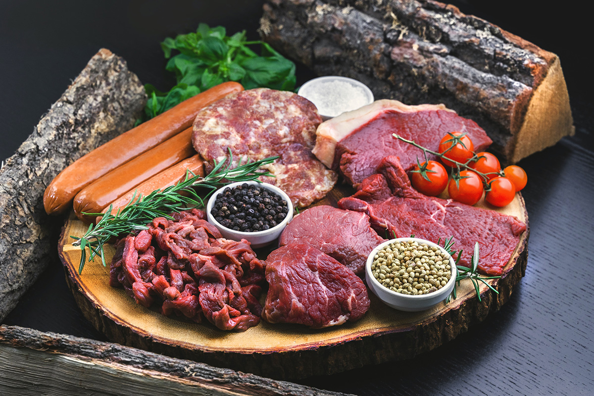
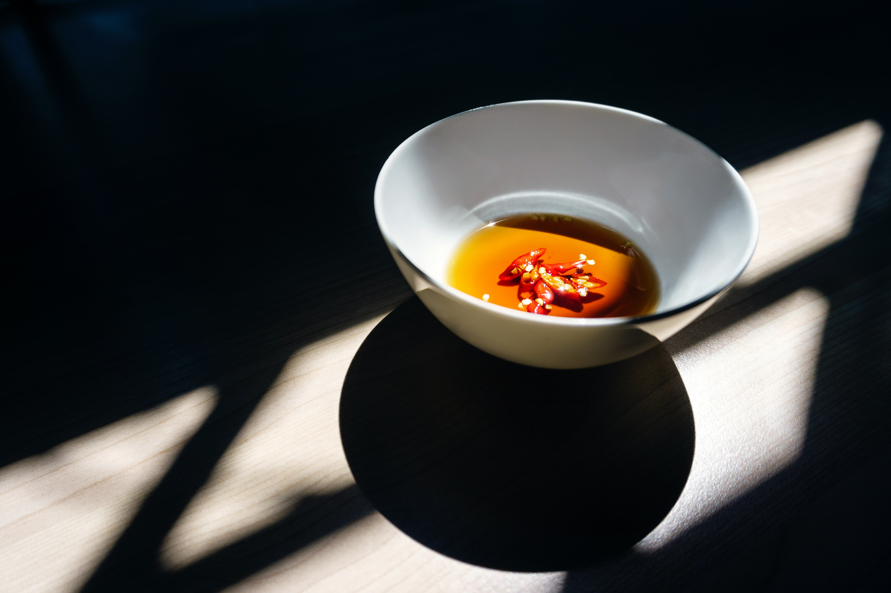
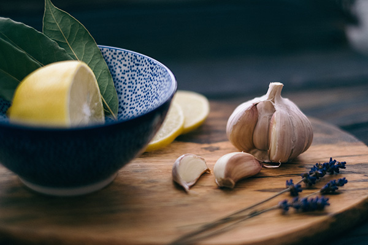

厳選した肉の数々
店内で提供しているお肉は100％国産和牛を使用しています。 上質な脂と赤身は、思わず舌を唸らせる味です。
クマミート自家製秘伝のタレで、さらに美味しく楽しめます。

クマミート秘伝のタレ
一般的な焼肉のタレと違い、さっぱりとした味わいです。 クマミートのタレは、青森県産のリンゴ果汁を使用することで、ジューシーでさっぱりとした風味になっています。ぜひご賞味ください。
醤油ベース
1.プレーンな味わい。
2.和牛の味を引き立てる。
3.ランチタイムに。
4.女性や幼いお子様にも。
soy sauce base
醤油ベースのタレ

にんにくベース
1.ガツンとガーリック。
2.暑い夏の日に。
3.クセになる風味。
4.スタミナをつけたい方。
extra garlic base
エクストラにんにくのタレ

熊本初上陸のこの機会に、
ぜひご来店ください。
国産和牛をこだわり抜いたタレでお楽しみいただけるだけでなく、本格炭火でさらに美味しく堪能できます。大好評のタレは店舗販売もおこなっています。
素材本来の風味を引き出すために、保存料や香料などの化学成分は一切使用しておりません。